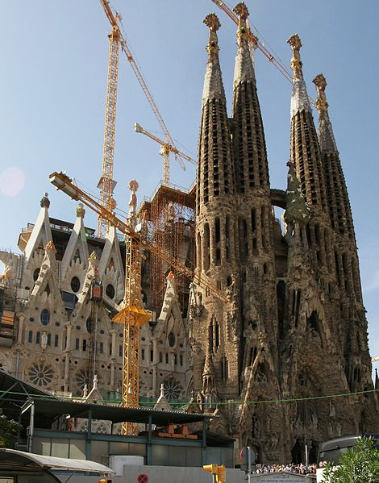

Barcelona je hlavním městem provincie Katalánsko. Leží při pobřeží Středozemního moře na severovýchodě Španělska. Po Madridu je druhým největším španělským městem (1,5 milionu obyvatel, v aglomeraci téměř 3 miliony). Barcelona je známá díky architektonickým stavbám Antoni Gaudího. K nejznámějším dílům Gaudího patří chrám Sagrada Familia, symbol města a mistrovské dílo, které dodnes není dokončeno (jeho výstavba stále probíhá, protože je ale financována pouze z darů, práce postupují pomalu). Gaudí dal tomuto objektu od roku 1883 až do své smrti v roce 1926 veškerou svou tvůrčí sílu. Mohutná stavba s osmi vysoko čnějícími věžemi se mezitím stala nejvýraznějším bodem v siluetě Barcelony. Z jeho věží, kam se stoupá po točitých schodech, je nádherný výhled na celé město a jeho okolí. V centru města jsou další Gaudího známé stavby, dům Milà, dům Batlló a Palau Guell.